地政学
クスコはインカ帝国の旧中心で、アンデス内陸の交通と象徴を握った都市です。現在も聖なる谷、マチュピチュ、地方行政を結び、リマ中心の国家の中で高地の歴史と自治意識を示します。山道と空港も政治的な接続点になります。

🇵🇪 ペルー / クスコ県 / World City Atlas
アンデス高地に残る旧インカ首都です。石組みの街路、スペイン植民地の広場、ケチュアの生活、マチュピチュ観光、祭礼、山岳の水、住宅と高度の負担が一つの谷に重なります。
都市の骨格
クスコは、標高の高い盆地に政治、信仰、商い、観光労働が詰まった都市です。インカの石組みと植民地の教会は景観の表面であり、その背後にケチュア語の暮らし、水の管理、住宅難、聖なる谷との移動が続きます。
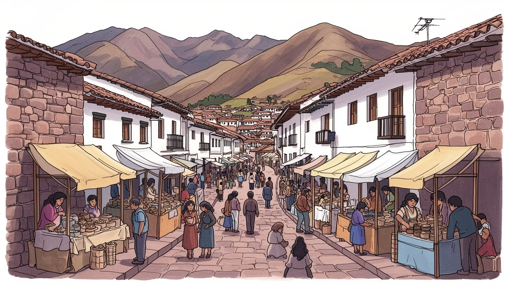
クスコはインカ帝国の旧中心で、アンデス内陸の交通と象徴を握った都市です。現在も聖なる谷、マチュピチュ、地方行政を結び、リマ中心の国家の中で高地の歴史と自治意識を示します。山道と空港も政治的な接続点になります。
観光、宿泊、飲食、案内、鉄道、手工芸、教育、行政が雇用を作る一方、収入は季節や国際情勢に左右されます。土産物店、清掃、運転、建設、家事労働も街を支え、観光の華やかさの裏に不安定な労働が今もある日常です。
ケチュアの言葉、インカの記憶、カトリックの聖人祭、先住民の儀礼が重なり、広場と教会と山が信仰の舞台になります。石組みは遺跡ではなく生活の壁でもあり、祭礼は観光商品である前に地域の暦を保っている都市です。
旅行者は石畳、広場、遺跡、聖なる谷を巡るが、住民は家賃、坂道、寒さ、観光客の集中、水不足、通勤、学校、医療と向き合う。美しい高地の街並みは、日常の負担と収入の期待が近い距離で交差する都市である今。
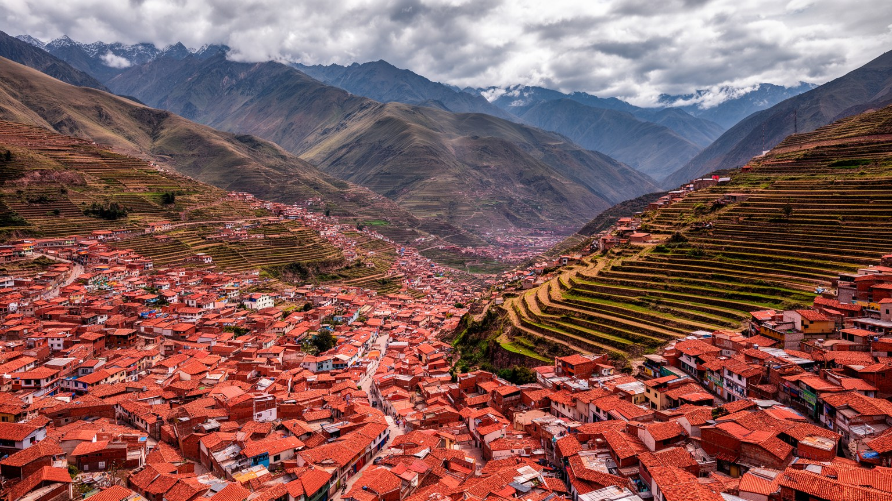
クスコを読む入口は標高です。市街地はアンデスの谷にあり、空気は薄く、日差しは強く、朝晩は冷えます。平地の大都市のように広がるのではなく、斜面、谷底、小河川、古い道筋に沿って住宅と商店が重なり、歩く速度そのものが地形に支配されます。中心部の石畳は観光の魅力ですが、住民にとっては坂道、荷物運び、雨の日の滑りやすさ、車両規制、救急や消防の難しさにも関わります。周囲の山は美しい背景であると同時に、水源、農地、聖地、災害リスクを抱える場所であり、都市生活を谷の外へ結びつけます。高地への到着は旅行者にとって高山病の経験として記憶されやすいが、住民にとっては学校、通勤、商売、祭礼を続ける日常の条件です。気候の乾季と雨季は、観光客の数、農産物の流通、道路の状態、建設工事の進み方を変えます。クスコの地理は、絵になる景観ではなく、移動、健康、水、住宅、商いを同時に決める都市の骨格です。谷の狭さは中心部の土地を貴重にし、外縁の斜面へ住宅を押し上げます。そこでは眺望が得られる一方、上下水道、舗装、公共交通、地滑りへの備えが課題になります。山と街を分けずに見ることが、クスコの暮らしを理解する近道です。観光地としての高度の経験は一時的ですが、住民には毎日の体調、移動時間、燃料代、住宅の向きとして積み重なります。都市の輪郭は、山への近さで決まります。
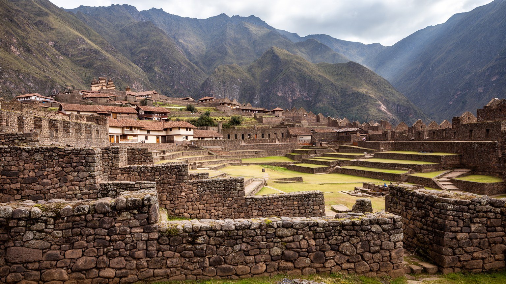
クスコはインカ帝国の首都として、道路、神殿、行政、儀礼を束ねる中心でした。都市の名は世界遺産の観光地として知られるが、石組みの精度を眺めるだけでは足りません。多角形の石壁、サントドミンゴ教会の下に残るコリカンチャ、サクサイワマンの巨石、旧市街の街路は、征服以前の国家技術と、スペイン植民地支配が上書きした権力の重なりを示しています。植民地期の教会や広場は、美しい建築であると同時に、先住民の政治と信仰を解体し、カトリックと王権の秩序を置いた場所です。現在のクスコでは、この二つの時間が観光パンフレットの上で調和して見えますが、実際には記憶、誇り、痛み、収入、保存規制が絡みます。石壁は住民の家や店の一部でもあり、保存の対象であることが生活の自由を制限することもあります。遺産の価値が高いほど、修理、交通、看板、家賃、商売の方法は厳しく管理されます。クスコの中心部を歩くことは、過去を博物館で眺めることではなく、帝国、植民地、共和国、観光経済が同じ壁を使い続ける現場を見ることです。石は動かないが、その意味は政治と経済の中で変わり続けます。誰がこの遺産を語り、誰が維持費を負い、誰が利益を得るのかという問いが、旧首都の重さを作っています。だから保存は建物だけでなく、地域の記憶を語る権利と、中心部で暮らし続ける権利を含む問題になります。
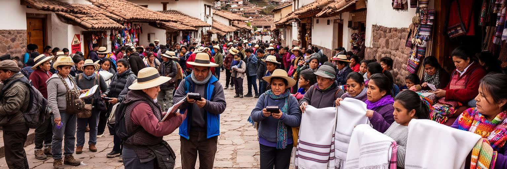
クスコの経済は観光なしに語れません。マチュピチュへ向かう玄関口として、ホテル、ゲストハウス、旅行会社、ガイド、鉄道、バス、レストラン、カフェ、土産物店、両替、写真サービスが中心部に集まります。観光は多くの雇用を作り、ケチュアの手工芸や音楽、料理を世界へ見せる機会にもなります。しかし、収入は季節、航空便、政治不安、感染症、為替、外国人旅行者の消費に大きく左右されます。広場で明るく働く人の背後には、長い待機時間、手数料、低い賃金、英語や接客を学ぶ費用、家賃上昇、家族のケアがあります。観光客が増えるほど中心部の店は外向きになり、日常の食料品店や住民向けサービスが押し出されることもあります。ガイドや職人は文化を伝える専門職である一方、観光客の期待に合わせて衣装や語りを固定される危うさも抱えます。クスコの観光を評価するには、入場者数やホテル稼働率だけでなく、働く人の安定、地域への利益配分、遺産保護、住民の暮らしを一緒に見る必要があります。世界遺産の街は、訪れる人を迎える舞台である前に、毎日働いて暮らす人の都市です。観光の成功は、笑顔の接客が続けられる労働条件と、文化が消費されるだけでなく地域の尊厳として残る仕組みにかかっています。特に若い世代にとって、語学や接客を学んでも安定した雇用へ進めるかは大きな分かれ目です。都市経済の評価もそこに宿ります。
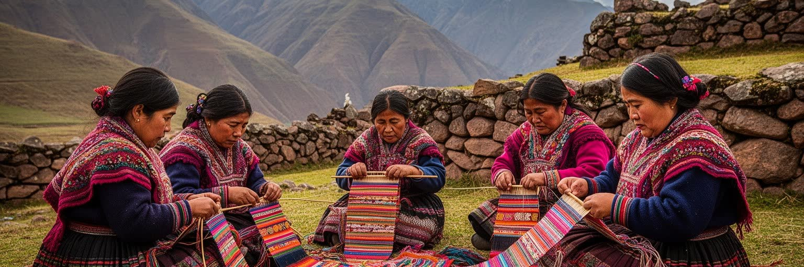
クスコでは先住民性が遺跡の中だけにあるわけではありません。ケチュア語の会話、織物の模様、市場の農産物、祭礼の衣装、山への敬意、家族の移動、学校での言語教育が、現在の都市を形づくっています。観光ではインカの栄光が強調されやすいが、先住民の歴史は征服、搾取、差別、土地の喪失、移住、抵抗を含みます。地方の村からクスコへ来る人は、商品を売り、学校へ通い、病院を使い、行政手続きを行い、親族との関係を保ちながら都市を使います。中心部の広場で売られる手工芸は美しいが、その価格交渉には国際観光の視線と地域の生活費が重なります。ケチュア文化を「昔のもの」として飾るだけでは、今を生きる人びとの権利が見えなくなります。都市の学校、役所、病院、観光業が多言語で機能するかどうかは、文化尊重の具体的な試金石です。クスコの石組みは帝国の技術を語るが、同じ街路を歩く人びとの生活が尊重されなければ、遺産は空っぽの背景になります。先住民の記憶を読むとは、古い神殿を訪ねることだけでなく、現在の労働、言語、教育、土地、祭りの中に続く関係を見ることです。観光客が写真に収める色彩の奥には、家族を支える商売、村との往復、都市での差別への対応があります。誇りと商品化が近い距離にあるからこそ、語り手を地域の側に戻す工夫が欠かせません。記憶は展示ではなく、暮らしの中で更新されます。
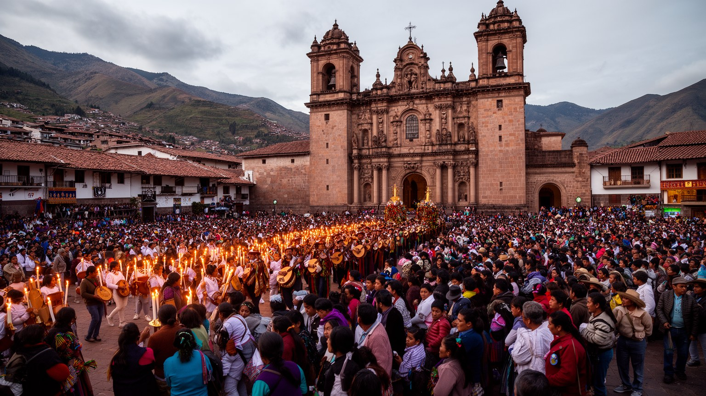
クスコの宗教生活は、カトリックの教会暦とアンデスの儀礼が重なり合って進みます。大聖堂、修道院、地区の教会では聖週間や聖人祭が行われ、広場には行列、音楽、花、香、ろうそく、屋台が集まります。インティ・ライミは観光イベントとして知られるが、太陽、山、祖先、国家の記憶をめぐる象徴的な舞台でもあります。祭礼は都市を華やかにする一方、交通規制、清掃、警備、商売、学校行事、家族の準備を伴う日常の仕事でもあります。教会の内部に見える絵画や祭壇には、ヨーロッパの形式とアンデスの感覚が混じり、植民地支配の歴史と地域の再解釈が同時に残ります。山や大地への敬意は、公式の宗教とは別の層で生活に続き、農業、旅、病気、家族の節目に関わります。観光客にとって祭りは写真を撮る機会かもしれないが、住民にとっては地域の役割分担、信仰、誇り、負担が絡む大切な時間です。クスコの祭礼を読むには、華やかな衣装だけでなく、準備する人、片付ける人、祈る人、見る人の位置を考える必要があります。宗教は過去の飾りではなく、都市が季節を分け、記憶を更新し、地域のつながりを確かめる方法です。広場を満たす音と行列は、観光の演出を越えて街の暦を動かしています。祭りの日の混雑や費用も含めて、信仰は都市運営と切り離せない公共の時間になります。祈りの場は、家族と地域が互いを確認する社会的な舞台でもあります。
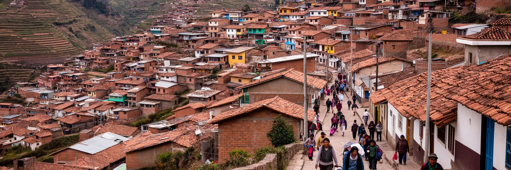
クスコの暮らしは、観光地の美しい中心部だけでは語れません。谷底の歴史地区では家賃と保存規制が重く、商業化が進むほど住民向けの住宅や店は少なくなります。外縁の斜面には新しい住宅地が広がるが、坂道、未舗装道路、バス便、上下水道、寒さ、地滑り、学校や病院までの距離が生活を左右します。標高の高い都市では、暖房、断熱、日射、換気、階段の上り下りが体力に響き、高齢者や病気の人、幼い子どもには負担が大きいです。観光業の収入は中心部で見えやすいが、家賃の上昇は働く人を遠くへ押し出し、通勤時間を延ばします。短期滞在者向けの宿泊施設が増えると、地域の近所づきあいや市場の利用も変わります。歴史的な石壁を守ることと、住む人の快適さを高めることは時に衝突するが、どちらか一方だけでは都市は続きません。クスコの住宅問題は、古い建物を保存する技術だけでなく、誰が中心部に残れるか、斜面のインフラをどう整えるか、観光利益を生活基盤へどう戻すかという問題です。夜の冷え込み、朝の通勤、狭い路地の配達、雨季の泥道を見れば、遺産都市の暮らしが単なる絵葉書ではありませんことが分かります。高地の美しさは、住まいの負担と切り離せません。住宅政策が観光政策の後回しになれば、街を支える働き手ほど中心から遠ざかります。日常の安心を守るには、保存、賃貸、公共交通、医療を同じ生活圏として整える必要があります。
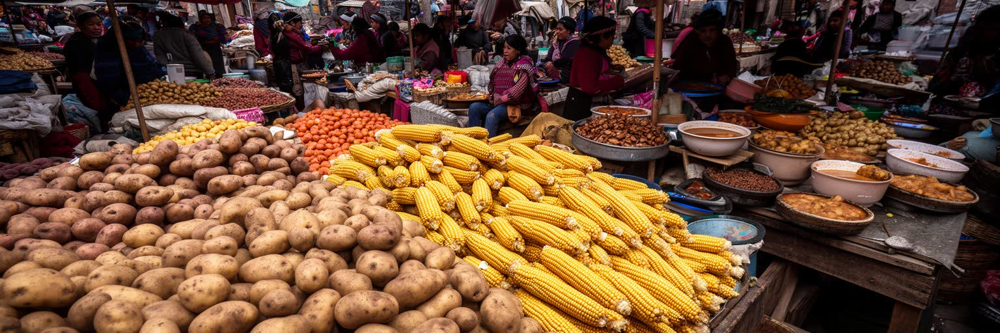
クスコの食は、観光客向けのレストランだけでなく、市場と家庭の台所から理解できます。サンペドロ市場のような場所では、ジャガイモ、トウモロコシ、キヌア、豆、唐辛子、チーズ、ハーブ、果物、肉、スープが並び、アンデスの農村と都市の食卓が直接つながります。高地の冷え込みに合う温かい汁物、朝のジュース、安い定食、祭礼の料理は、働く人と学生の体を支えます。近年はアルパカ肉、キヌア、伝統食材を使った洗練された料理も増え、観光の魅力になっていますが、食文化の価値は高級化だけでは測れません。市場で値段を交渉し、地方から届いた作物を選び、家族のために料理を作る日常こそ、都市の食を支えています。農産物の価格は天候、道路、燃料、観光需要に左右され、収入の少ない家庭には重いです。観光客が食べる一皿の背後には、山地の畑、運搬する人、市場の売り手、調理場の長い労働があります。クスコの食を読むことは、アンデスの生物多様性と、現金収入に追われる都市生活を一緒に見ることです。市場は土産を買う場所である前に、地方の時間が都市の朝へ届く場所であり、住民の健康と家計を映す場所です。香りと湯気の中に、観光都市の外向きの顔とは違うクスコの持久力が見えます。食卓は土地の記憶を保ちながら、観光客の味覚と住民の家計を同時に受け止めています。市場の賑わいは、地域の栄養と収入の安全網でもあります。
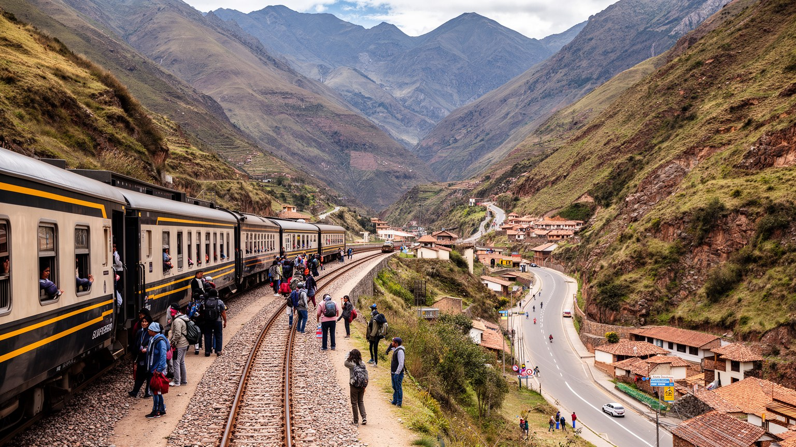
クスコは単独の都市ではなく、聖なる谷、オリャンタイタンボ、ピサック、マチュピチュへ続く広域の移動網の中心です。鉄道、バス、タクシー、徒歩の道は、観光客を遺跡へ運ぶだけでなく、村の住民、農産物、職人、学生、働き手の移動を支えます。マチュピチュへの鉄道は世界的な観光体験として知られるが、運賃、予約、混雑、運行停止は地域経済に直結します。道路が閉じたり社会抗議で交通が止まったりすると、ホテル、ガイド、土産物店、農家、家族の収入がすぐに影響を受けます。聖なる谷は美しい景観と遺跡の連続である一方、観光開発、土地価格、農地の転用、水利用、廃棄物、文化の商品化の緊張も抱えます。クスコ中心部から谷へ向かう移動は、旅行者にとって短い日帰り行程かもしれないが、地域の人びとにとっては学校、病院、市場、行政への生活路です。交通を観光インフラとしてだけ整えると、住民の運賃や時間が置き去りになります。クスコの広域性を理解するには、駅やバスターミナルで誰が何を運び、どの時間に移動するのかを見る必要があります。山の谷を結ぶ道は、帝国の道路網の記憶を引き継ぎながら、現代の観光経済と地域生活を同じ線路に乗せています。移動の権利は、遺産の利用権でもあります。便利な列車の座席の背後には、地域住民が使える交通をどう確保するかという公平性の課題が残ります。
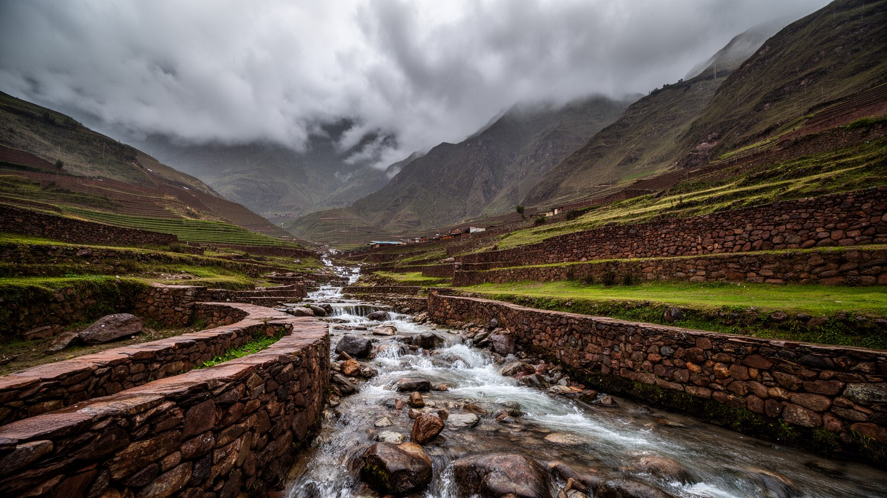
クスコの気候は、乾季の晴天と雨季の強い雨がはっきり分かれます。乾季は観光に向くが、空気は乾き、朝晩の冷え込みが強いです。雨季には石畳の道が滑りやすくなり、排水、斜面の崩れ、道路の寸断、河川の増水が問題になります。都市の水は周囲の山と流域に頼り、人口増加、宿泊施設、飲食店、住宅地の拡大は水道と下水の負担を増やします。観光客が使うシャワーや洗濯、レストランの水も、住民の生活水と同じ資源から来ています。気候変動はアンデスの雪氷、水源、雨のパターンを変え、高地都市の将来を不安定にします。乾いた季節の水不足と、雨季の災害は別々の問題ではありません。水をため、きれいにし、公平に配り、斜面から安全に流す仕組みが同時に必要です。中心部の歴史的な景観を守る排水工事は目立ちにくいが、都市の保存と暮らしを支える重要な基盤です。クスコの美しい山並みは、都市に恵みを与えるだけでなく、管理を怠れば危険も運びます。気候を読むことは、天気の快適さではなく、水の通り道、斜面の住宅、観光施設の消費、地域の農業を一つの循環として見ることです。雨音が石畳に響く時、都市の歴史とインフラの弱さが同時に現れます。水の扱いは、クスコが住み続けられる遺産都市であるための条件です。観光の快適さを保つ設備も、流域全体の水を使う以上、地域の合意と節度を必要とします。
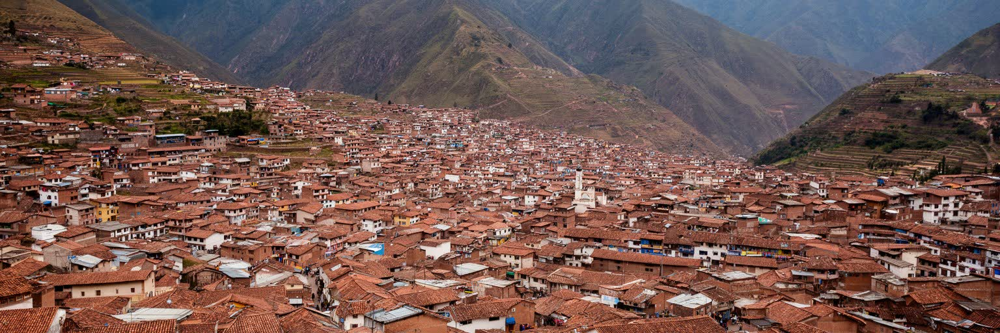
クスコを一つの名所として見ると、インカの石組み、広場、教会、マチュピチュへの入口だけが目立ちます。しかし都市として読むと、旧帝国の記憶、植民地支配、ケチュアの生活、観光労働、山岳の水、斜面住宅、祭礼、市場、聖なる谷への交通が一つの谷で結びついていることが分かります。世界遺産の価値は、過去の建築が残っていることだけではありません。その遺産を使いながら、住民が働き、祈り、学び、商い、寒さと坂道に向き合っている点に都市の厚みがあります。観光はクスコに収入と国際的な注目をもたらすが、家賃上昇、文化の商品化、労働の不安定さ、交通混雑、水利用の負担も生みます。高地の美しい景色は、生活の容易さを意味しません。石壁の保存、住民の住まい、村との移動、水と気候への備えを同時に考えなければ、遺産都市は舞台だけになってしまいます。クスコの強さは、古代の象徴性と現在の生活力が近い距離にあることです。広場の儀礼、市場の朝、坂道の通学、谷へ向かう列車を重ねて見ると、この都市はペルーの過去を飾る場所ではなく、アンデスが現代世界と交渉する場所として立ち上がります。クスコを深く見るとは、遺跡の美しさに感動しながら、その美しさを支える人と制度の負担を忘れないことです。訪問者の記憶に残る景観は、住民の権利と生活基盤が守られてこそ、都市の未来として続きます。そこにクスコを読む意味があります。